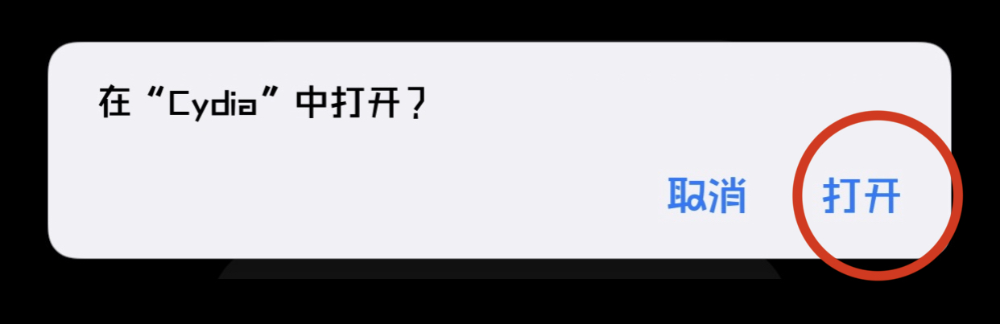
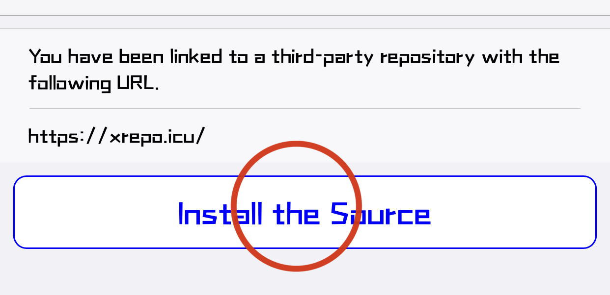
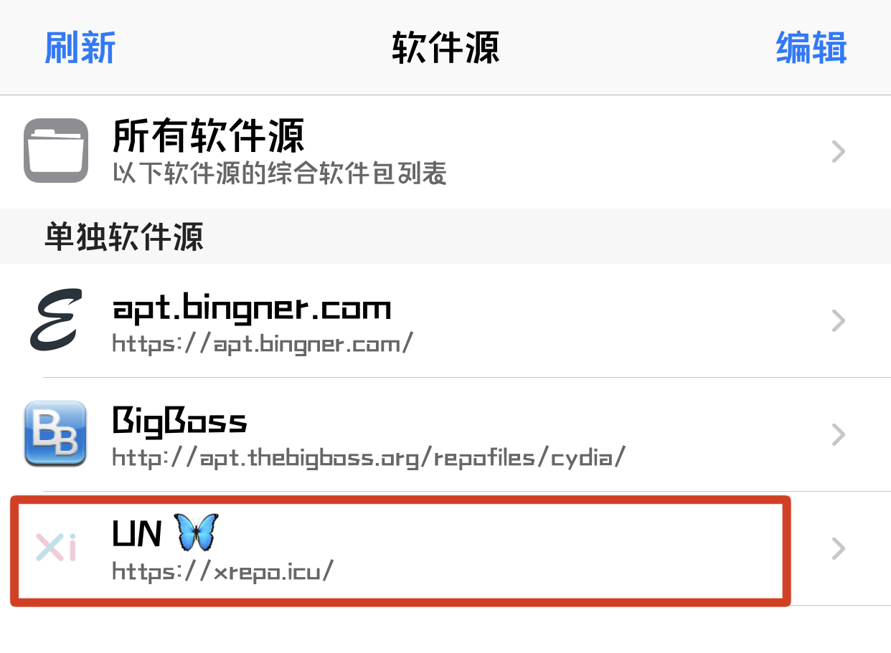
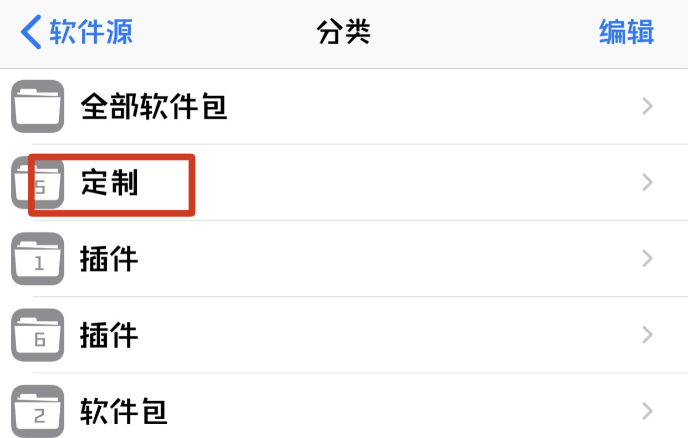
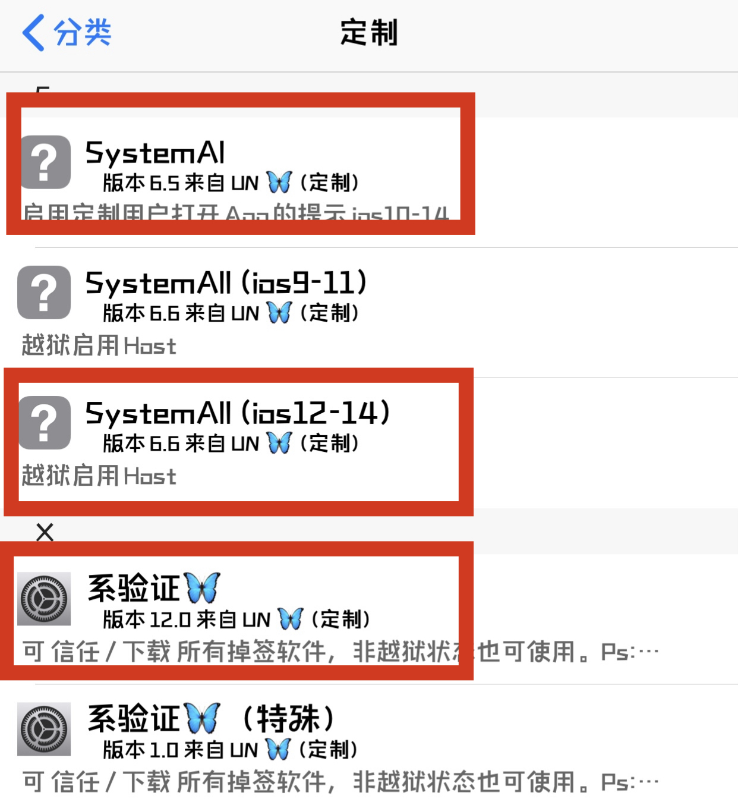
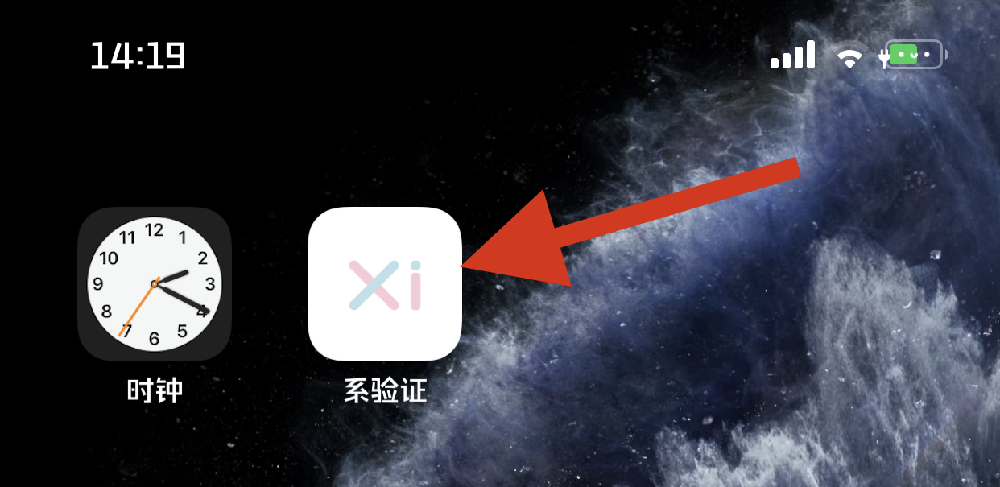
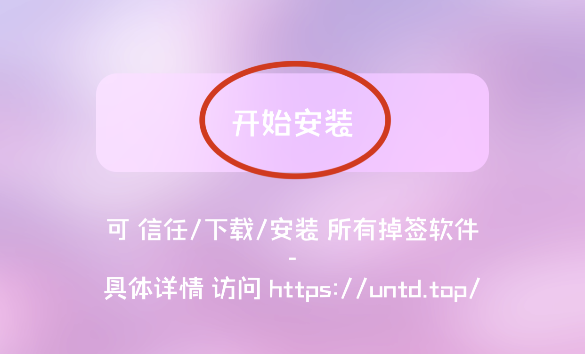

提示：安装前请提前购买本插件
1.手机访问untd.top点击按钮“添加软件源”。
2.在提示框中点击“打开”。

3.点击按钮“Install the Source”。

4.在Cydia中 进入软件源并点击“UN”。

5.点击选项“定制”。

6.安装红框圈起来的插件“如图所示”。

7.安装完成后进入桌面，会出现“系验证”app，打开它。

8.进入系验证后，会出现“开始安装”提示，点击“开始安装”。

9.如果安装完成，重新进入“系验证”app后会提示“已安装”。
------注意事项，如果网络错误，那么请关闭代理后重试。
安装完成后，请前往“设置-通用-描述文件或设备管理”重新信任软件，完成后，即可不用担心设备掉签问题了。